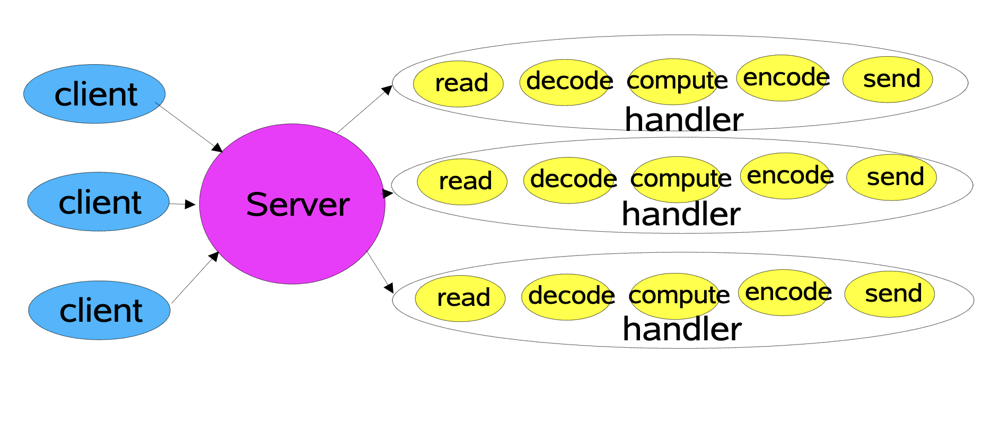
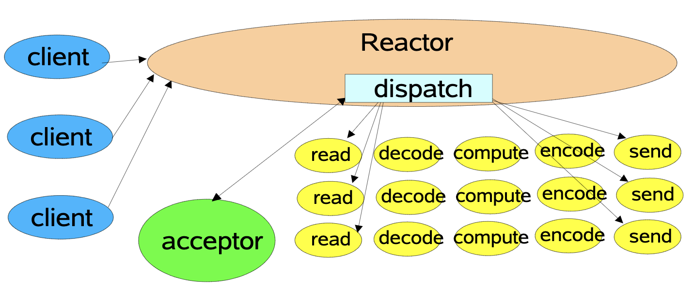
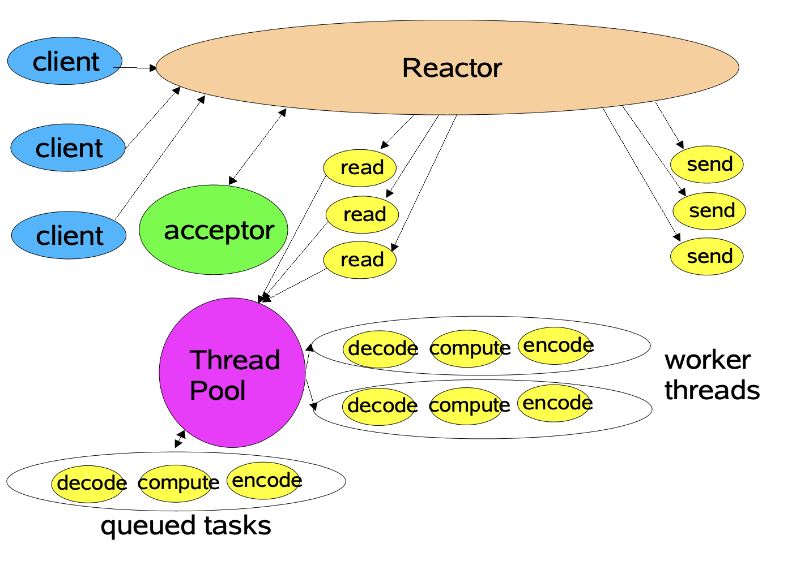
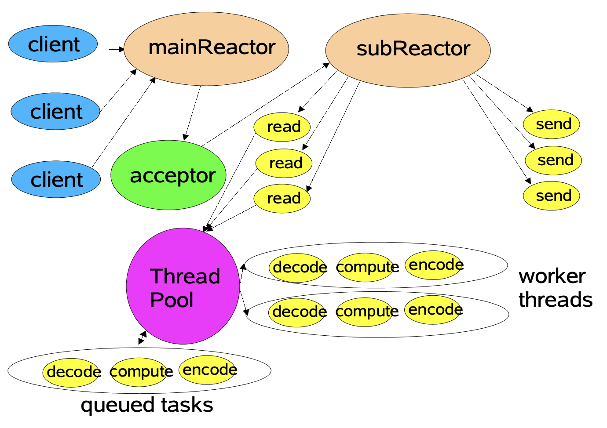

netty的线程模型
上文说到Unix中的5中IO模型，分别是同步阻塞IO,异步非阻塞IO，IO多路复用，信号驱动式IO，异步IO。这个是在系统成本讨论的IO模型，这次所要聊到的是在Netty中的线程模型，我更倾向于说是一种编程模型，思想层面上的。
基本来说所有的服务端网络处理程序（网络通信）处理步骤都是如下：
- Read request(接受客户端发来的二进制数据)
- Decode request(将接受到的二进制数据解码为可用数据)
- Process request(处理请求数据，进行业务处理，准备返回客户端的数据)
- Encode request(将结果编码为二进制数据)
- Send request(将编码好的二进制数据发送出去)
传统的IO模型
传统的网络服务设计大概如下图：

结合上图了来说就是服务器开启监听后，客户端发起请求过来，就会有一个handler进行处理，所有的处理都在这个handler中完成（上面所提及的5个步骤），由于传统的IO是同步阻塞的，这会导致如果在单线程中进行处理，则后续来的客户端就得不到及时的处理，需等到前面的请求处理完成后在进行处理。
上诉的处理方式显然是不能接受的，在传统的网络服务设计中往往会针对一个请求创建一个线程进行处理即上述中的handler往往会在一个线程中进行处理。也就是Doug Lea大佬在ppt中说的Each handler may be started in its own thread.
简单的代码示例如下：
1 | public class BioServer { |
在后续的发展中出现了基于事件驱动的设计，在程序中注册关心的事件，当事件发生时，去针对具体事件进行处理，这就是非阻塞IO和多路复用的设计模式：如下图所示：

这就是最基础版的reactor模型（单reactor单线程）
单reactor单线程
这里涉及到三个概念：
- Reactor：负责响应IO事件，当检测到一个新的事件时，就将其发送给响应的handler处理
- Handler：负责具体的事件处理，这里的时间主要是指读写事件
- Acceptor：接受者，主要负责响应连接请求，建立连接。
在这种模型下Reactor中有一个selector，在启动时，向selector中注册监听请求连接的事件，当发生连接事件时，reactor就将这个事件交由acceptor进行处理，acceptor复制连接的建立并且在selector中注册读事件，后续selector发现有可读事件之后就将读事件交由handler进行处理。
以下是我理解的reactor模型代码：
1 | class Reactor implements Runnable { |
1 | public class Acceptor implements Runnable { |
1 | public class Handler implements IOEventListener { |
1 | public class Handler implements Runnable { |
1 | import java.io.IOException; |
上述代码是基于我对reactor模型的理解和对事件驱动模型的理解所完成的，若有偏颇还望指出。
在主函数中创建了一个Reactor,在Reactor的构造方法中初始化了ServerSocketChannel和Selector，并且将ServerSocketChannel注册到了Selector中，关注于接受事件，同时创建了一个Acceptor用于处理连接请求。在SelectionKey中放入了这个Acceptor方便后续选中该key的时候能调用Acceptor来进行注册。当Reactor检测到有事件发生时就会调用dispatch方法进行事件的分发。在dispatch中回去取出SelectionKey的attachment并去调用其run方法。这样当是注册事件的时，就会调用到Acceptor来处理，当遇到读事件时就会调用到Handler来进行处理。
上面这个模型会有什么问题喃？
- 所有的请求都是在一个线程上处理的，包括建立连接到数据的读取，数据的处理以及响应结果的发送，这样的后果是显而易见的：线程的压力大，如果数据处理的时间较长，则会导致大量客户请求堆积。
- 线程的跑飞，所有的处理都是在一个线程上，如果这个线程抛出异常了，则很有可能会推出进而导致整个服务不可用。
有了上面的问题，先驱们有找到了下面两种模型：
- 单reactor多线程
- 主从reactor多线程
单reactor多线程
单reactor多线程是在单Reactor单线程基础上进化来的，由原来所有的事件处理都在一个线程上完成变成在不同的线程上进行处理。

上图中展示了单reactor多线程模型
通过与单reactor单线程对比，单reactor多线程增加了专门用于处理非io操作的decode,compute,encode操作，大大地提升了程序的效率，这种模型下，客户端发来的请求的连接，注册，读写还是是用过reactor中的线程去处理的，只是在读取完成后交由worker线程来进行处理。
这种模型还是存在以下的问题：
当短时间内有大量连接建立发起请求是，reactor中的线程不仅需要处理连接的建立还需要处理读取和分发，这样在应对猛增的请求时也会由于reactor中的线程忙不过来而导致阻塞。
这个时候分而治之的思想往往能帮助我们解决这个问题。
主从reactor多线程

上图是主从reactor多线程的示意图
相对于单reactor多线程多了一个subReactor，在这种模型下，mainReactor主要负责连接的建立，然后讲建立好的通道注册到subReactor中去，而在subReactor则负责监听具体的读写事件，将事件派发给workerThread进行decode,compute,encode操作。
这样就讲接受请和请求的处理分隔开来，即使面对大量连接的创建也不慌了。
以上是我对netty中三种线程模型的理解，在这里先挖个坑，后续研究下netty的源码，看我的理解和netty中的线程模型有哪些出入。